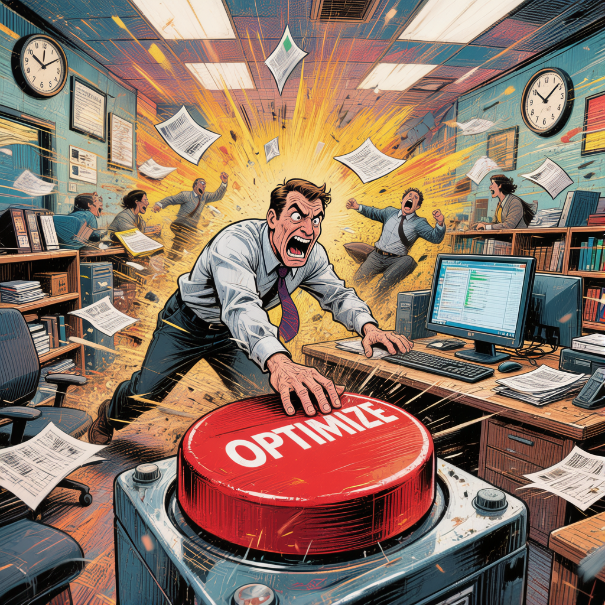

🎉 劳动节特辑 · 2026年5月1日 周五
📊 每日职场英语
今日主题：数据与分析技能
⚡ 5个高频职场词汇 · 劳动者必备分析力
1
benchmark
n./v. 基准；参照标准；对标
/ˈbentʃmɑːrk/
播放音标
释义：
基准；参照标准；对标比较。指用于衡量或比较的标准参考点，常用于评估绩效、产品或流程。
"We need to benchmark our product performance against industry leaders before the Q3 review."
中文：在第三季度评审前，我们需要将产品性能与行业领先者进行对标分析。
播放
💡
记忆技巧：
"bench"（长凳/法官席）+ "mark"（标记）→ 法官席上的标记 = 大家都要对齐的基准线。在会议中说"Let's benchmark this"意思是"我们来做个对标"，立刻显得专业！
2
insight
n. 洞见；深刻理解；见解
/ˈɪnsaɪt/
播放音标
释义：
洞见；深刻理解。指对某事物本质的深入理解或有价值的发现，是数据分析中最重要的产出之一。
"The customer survey gave us valuable insights into why users were churning."
中文：客户调查让我们深刻了解了用户流失的原因。
播放
💡
记忆技巧：
"in"（向内）+ "sight"（视觉/看见）→ 向内看 = 洞察内在真相。汇报时总结"Key insights from this data:"，老板立马觉得你有思想深度！
3
optimize
v. 优化；使最优化
/ˈɒptɪmaɪz/
播放音标
释义：
优化；使达到最佳状态。指对流程、系统或代码进行改进，使其效率最大化或成本最小化。
"Our team is working to optimize the checkout flow to reduce cart abandonment by 20%."
中文：我们团队正在优化结账流程，以将购物车放弃率降低20%。
播放
💡
记忆技巧：
"optim"（最好的/optimal的词根）+ "ize"（使成为）→ 使成为最好状态。PM 日常三件事：analyze（分析）、optimize（优化）、report（汇报）。

4
visualize
v. 可视化；形象化；使图形化
/ˈvɪʒuəlaɪz/
播放音标
释义：
可视化；将数据或概念以图形方式呈现，使复杂信息更直观易懂。在产品和数据领域极为常用。
"It's much easier to visualize the user journey with a flowchart than a spreadsheet."
中文：用流程图来可视化用户旅程比用电子表格容易得多。
播放
💡
记忆技巧：
"visual"（视觉的）+ "ize"（使成为）→ 使成为视觉的东西。PPT 做图表时跟老板说"Let me visualize this data"，比说"画个图"高级多了！
5
interpret
v. 解读；诠释；理解
/ɪnˈtɜːrprɪt/
播放音标
释义：
解读；诠释。指对数据、结果或信息进行分析并给出含义，是从数据到决策的关键步骤。
"How you interpret this data will directly affect our product roadmap for next quarter."
中文：你如何解读这份数据，将直接影响我们下季度的产品路线图。
播放
💡
记忆技巧：
"inter"（在…之间）+ "pret"（价值/拉丁词根）→ 在数据与意义之间搭桥 = 解读。注意和"翻译"区分：interpreter 既可以是"口译员"也是"解读者"，数据会议上两个意思都用得到！